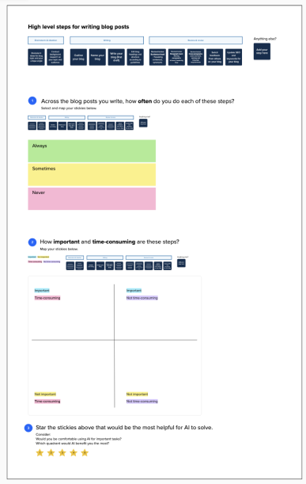

USER RESEARCH SPOTLIGHT: USER INTERVIEWS

Qualitative
Exploratory user interviews into feature directions for AI-infused blog posts
Since this is a brand new feature, I built an interactive mural activity to help participants brainstorm solutions that could be possible with genAI and how that may solve their painpoints today.
Identify painpoints for new generative AI workflow in AskIBM in order to streamline adoption and drive development decisions.
Completed 1:1 user interviews with applicants with 5 participants in Spring 2024.
- 30-minute virtual sessions
- Interactive mural activity
- 5 blog-post writers

*Numbers and specific details have been fictionalized or removed due to confidentiality.